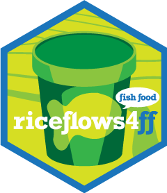

A spatial database for salmonid rearing on Sacramento Valley rice fields
Substantial recent research has demonstrated the food production benefits of floodplain inundation can increase growth and survival of rearing juvenile salmonids (see Goertler et al 2018, Katz et al 2017, Jeffres 2006, Grosholz and Gallo 2005). Approximately 500,000 acres of rice fields have the potential to produce food (phytoplankton and zooplankton) that can be delivered to the Delta, the Sacramento River, and their contributing watersheds to benefit juvenile salmon and other native fish.
Detailed data on rice field drainage conveyance systems that move water between farm fields and the Delta and its watershed is essential to scale up fish food production management actions. This project—a collaborative effort between FlowWest, RD108, the California Rice Commission, the Metropolitan Water District of Southern California, and CalTrout—addresses the significant information gap around the system of natural channels, canals, and structures that move flows (and in some cases fish) to and from these fields.
FlowWest assembled a quantitative spatial database of the Sacramento Valley rice field drainage system, mapping and calculating drainage system characteristics influencing suitability for fish food production and/or delivery, such as:
The R package fishFoodMWD, and this accompanying website, provides access to the resulting spatial database. Results, including the distances and relationships between rice fields and their connected canals and rivers, can be explored and filtered using the interactive map on this website. The datasets and accompanying plotting and calculation functions can be accessed directly by installing the R package. Datasets are also available in standard GIS (shapefile) format.
Install the latest development version of fishFoodMWD from GitHub:
remotes::install_github("flowwest/fishFoodMWD")Once the package is installed, call the package library to load all the datasets and access all the calculation and plotting functions.
library(fishFoodMWD)The names of all the provided datasets and functions are prefixed with ff_ for clarity. Use the Reference section of this website to access documentation of all these datasets and functions.
The following articles dive into greater depth on the R package functionality and usage.
The following articles explore the underlying assumptions and modeling process behind our results.